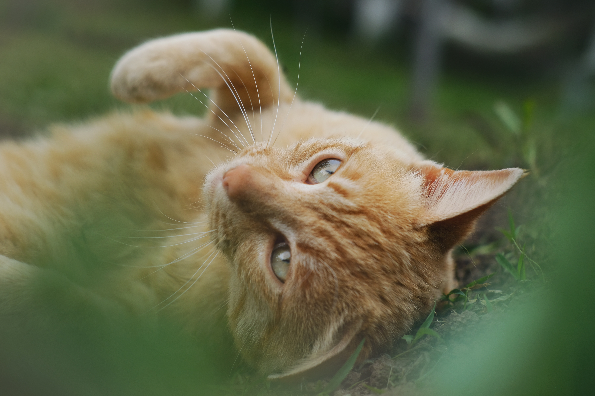
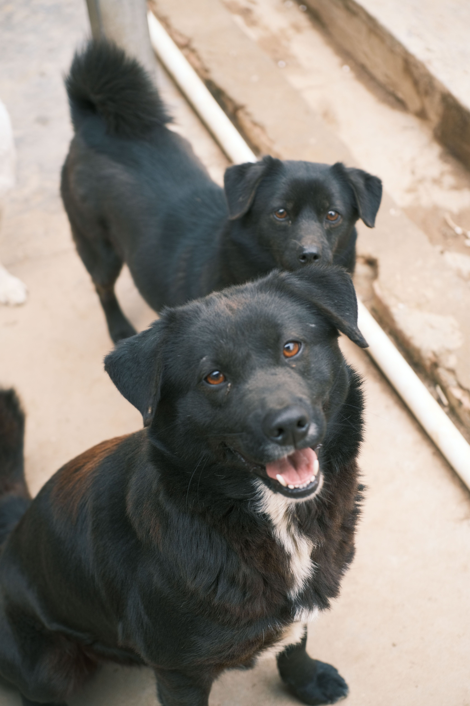
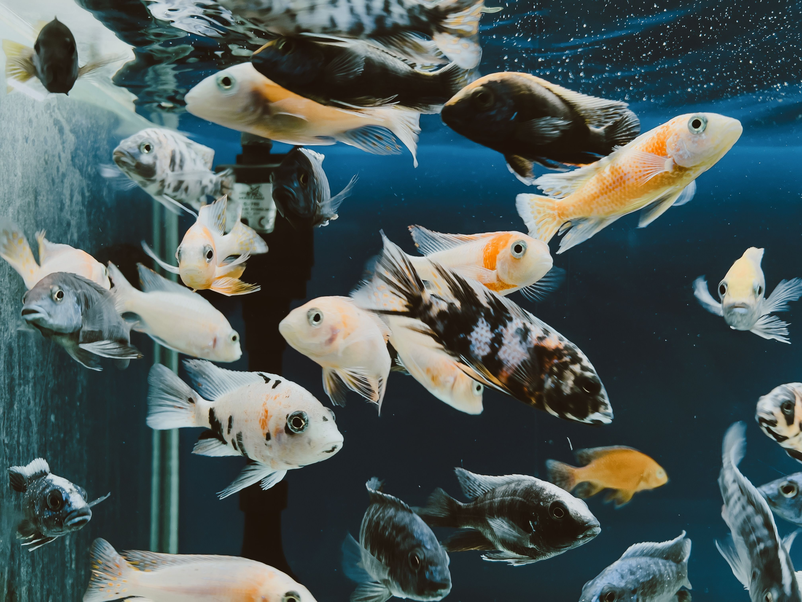
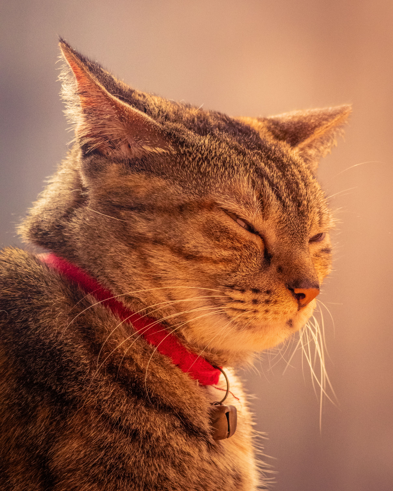

PetBem-Estar
Um ambiente planejado para o cuidado e a tranquilidade do seu melhor amigo, onde cada detalhe foi pensado para aliar saúde, estética e muito carinho. O PetBem-Estar nasceu com o propósito de transformar a rotina do seu pet em uma experiência de puro conforto, contando com profissionais especializados, produtos de alta qualidade e um atendimento que respeita o tempo e a individualidade de cada animal.
Aqui, oferecemos serviços completos para garantir a vitalidade e a alegria do seu companheiro:
Banho e Tosa Personalizados: Utilização de cosméticos hipoalergênicos, água na temperatura ideal e técnicas que reduzem o estresse, adaptadas à pelagem e ao temperamento do seu pet.
Veterinário de Confiança: Consultas preventivas, orientações nutricionais e acompanhamento clínico com foco na longevidade e no bem-estar integral.
Espaço de Convivência e Lazer: Área segura e higienizada para socialização e recreação supervisionada, ideal para quem precisa de um ambiente acolhedor durante o dia.
Loja Especializada: Seleção rigorosa de rações super premium, petiscos naturais, brinquedos educativos e acessórios que unem durabilidade e estilo.
Venha nos fazer uma visita e descubra como o cuidado profissional pode fazer toda a diferença na qualidade de vida do seu pet.
Galeria de fotos



